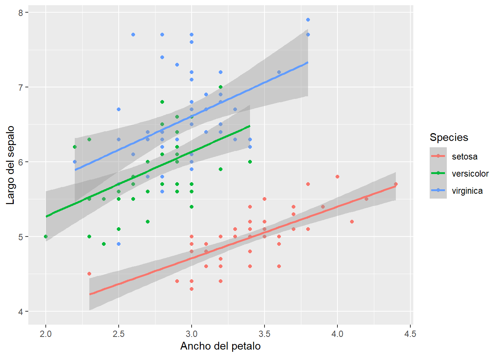

#Aquí se muestra una forma muy fácil de hacer un gráfico en R con ggplot2
library(tidyverse)## Warning: package 'tidyverse' was built under R version 4.0.3## -- Attaching packages ---------------------------------------------- tidyverse 1.3.0 --## v ggplot2 3.3.2 v purrr 0.3.4
## v tibble 3.0.3 v dplyr 1.0.2
## v tidyr 1.1.2 v stringr 1.4.0
## v readr 1.3.1 v forcats 0.5.0## Warning: package 'stringr' was built under R version 4.0.3## -- Conflicts ------------------------------------------------- tidyverse_conflicts() --
## x dplyr::filter() masks stats::filter()
## x dplyr::lag() masks stats::lag()data("iris")
ggplot(iris, aes(x=Sepal.Width,y=Sepal.Length))+geom_point(aes(color=Species))+
labs(x="Ancho del petalo",y="Largo del sepalo") + geom_smooth(method = lm,formula = y~x, aes(color=Species))